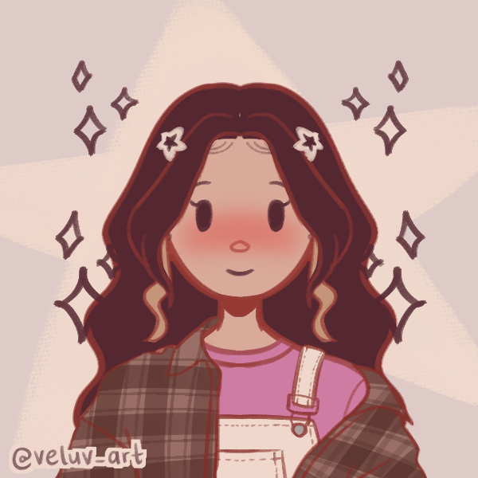

Conheça um pouco mais de mim

Eu me chamo Mayara Leme Cabetti, tenho 16 anos, sou uma garota, paulista e paulistana, que reside atualmente na cidade de Sumaré-SP. Sou alunas das Instutuições de Ensino SESI/SENAI, onde curso o Ensino Médio Técnico, me expecializando na área de Desenvolvimento de Sistemas. Participo de diversos projetos escolares, Gosto de enfrentar novos desafios, aprender tecnologias diferentes e desenvolver projetos que contribuam para meu crescimento profissional.
Em meu tempo livre gosto de fazer diversas coisas, como tocar meu Ukulele, brincar com minhas coelhas, jogar vôlei, e também cozinhar para minha família! Sempre fui muito ativa, por isso, tenho diversas habilidades esportivas e manuais, além de facilidade em lidar com pessoas.
Por mais que ainda tenha dúvidas sobre o que seguir, espero construir uma carreira na área de tecnologia, atuando como desenvolvedora de software. Pretendo continuar estudando, aperfeiçoando minhas habilidades técnicas e participando de projetos que me permitam crescer profissionalmente e contribuir com soluções inovadoras.